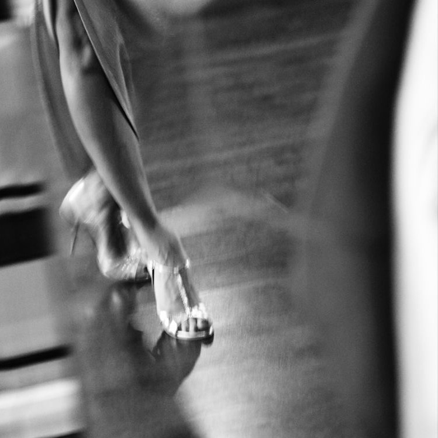

Леди стайл
- Vogue (Вог)
- Vogue Old Way — стиль включает в себя элементы самого раннего Вога, каким он был до 90-х годов. Зародившийся под впечатлением от журнальных поз моделей, а позже впитавший в себя оригинальные элементы позаимствованные из различных культур
- New Way — Новое течение стиля Вог, возникшее после 90-х. Включает в себя элементы, требующие полной концентрации, балансировки и контроля над телом. New Way базируется на различных танцевальных техниках, акробатических элементах, флексинге, музыкальности и растяжке
- Voque Femme — базируется на женственности, подчеркивании линий фигуры.
- Runway — Техника профессиональной подиумной походки в сочетании с стилизованными шикарными костюмами. Категория Runway является наиболее ярким способом самовыражения на Vogue Ball.
- Dancehall (Дэнсхолл) Dancehall — это уличный ямайский танец, включающий в себя различные социальные танцы при обязательном наличии особого чувства, которое движет танцором, называемого в дэнсхолле attitude(подача, характер). Стиль концентрируется прежде всего на степах и мувах. Танцевальные степы создаются спонтанно, во время уличных вечеринок. В широком смысле понятие Dancehall представляет собой культуру, которая объединяет музыку, танец, общество и политику. Но по истечении времени, политический контекст был утрачен, а танец стал более зрелищным и развлекательным.
- High Heels (Хай хилс)  High Heels — микс разнообразных стилей от хип-хопа до джаза, который исполняется на высоких каблуках. В направлении нет базовых элементов, так как все движения заимствованы из других танцев, также в стиле отсутствуют жесткие рамки и ограничения. Связки могут строиться как на верхнем, так и на нижнем уровне. Этот стиль учит держать равновесие, развивает координацию движений, а также укрепляет мышцы ног.
 Vogue – стиль, базирующийся на модельных позах и подиумной походке. Отличительные особенности: быстрая
техника движения руками, вычурная манерная походка, падения, вращения, обильное количество позировок,
эмоциональная игра.
Vogue – стиль, базирующийся на модельных позах и подиумной походке. Отличительные особенности: быстрая
техника движения руками, вычурная манерная походка, падения, вращения, обильное количество позировок,
эмоциональная игра.Составляющие стиля: